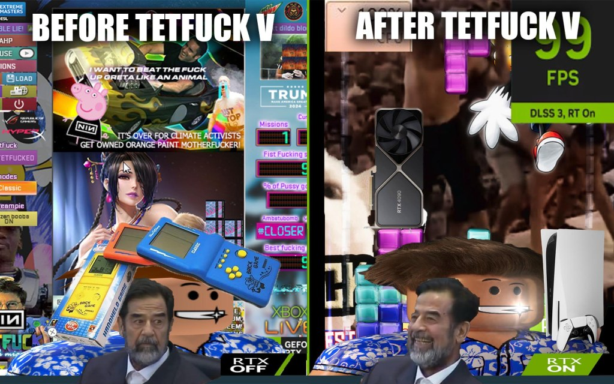

Blog
last updated: 4/24/2024
Click "Visit TetFuck Website" for more latest blog or if you want to read older posts. Or visit https://tetfakgame.wordpress.com/ on your web browser.
A shiny wet, juicy TetFuck blocks. More details soon.
Our next major TetFuck game will support amazing ReShade and NVIDIA RTX Remix shit, so you can “Make TetFuck blocks Wet Again!”, the graphics will be 2000x times better than the old school TetFuck 2142, but we will kept updating both as long as we can, and both games will be bundled in one package, which was named as TetFuck Collectors Edition!
We will reveal more information later in May, so stay hyped as shit!


For more older posts, click on the "Visit TetFuck Website". Or visit https://tetfakgame.wordpress.com/ on your web browser.
© 2024 The TetFuck Company. All other trademarks are property of their respective owners. If you want to play the real Tetris, visit tetris.com, or the original TetFun 2000 here.
Legal disclaimer:
This page (and the game) is created for comedic purposes,
thus it’s under fair use, please don’t take it seriously.
This is NOT an official Tetris(R) product. Tetris ® & © 1985~2024 Tetris Holding. TetFun 2000 © Jaibo Software.
Special Thanks to Vinesauce, SWG, zippy, tijon, Nine Inch Nails and many others.
Legal disclaimer:
This page (and the game) is created for comedic purposes,
thus it’s under fair use, please don’t take it seriously.
This is NOT an official Tetris(R) product. Tetris ® & © 1985~2024 Tetris Holding. TetFun 2000 © Jaibo Software.
Special Thanks to Vinesauce, SWG, zippy, tijon, Nine Inch Nails and many others.